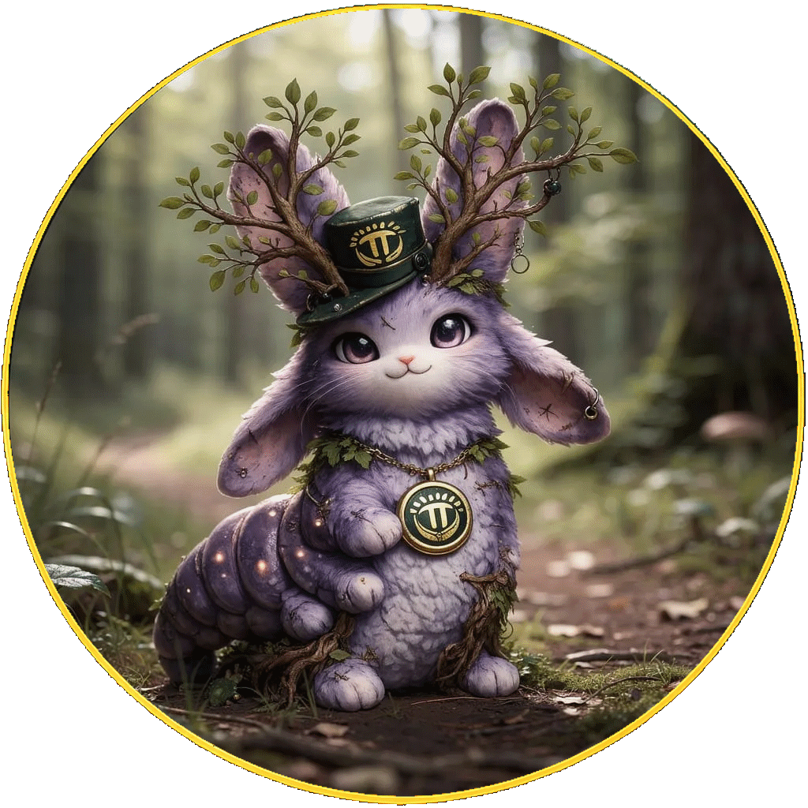
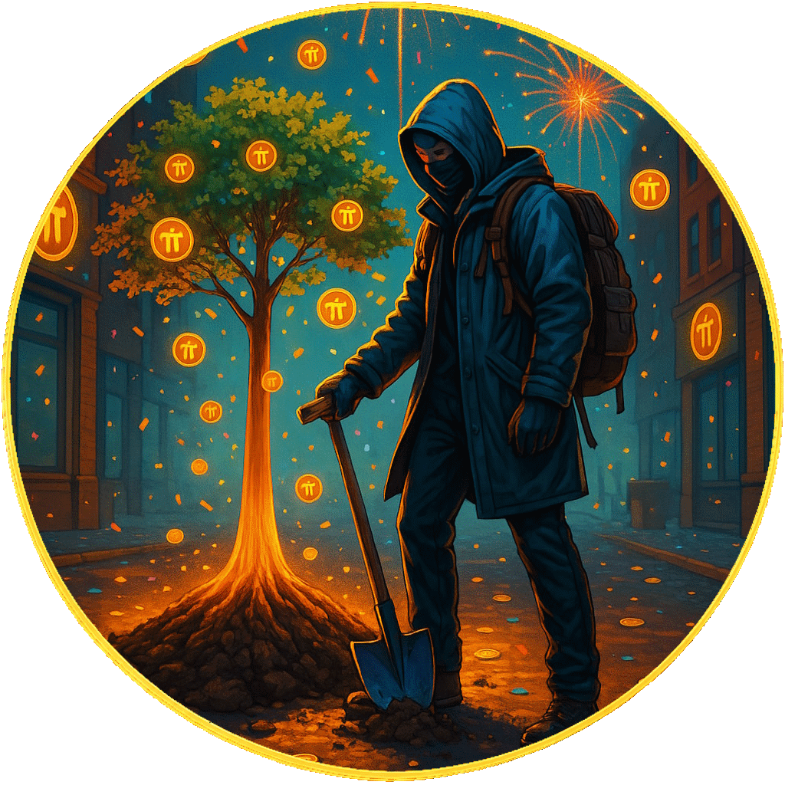

THE PIONEER FOREST
Forest Hub
A clearing.
This clearing reveals how The Pioneer Forest is shaped — living campaigns, shared artifacts, and the record behind them.
Art shapes it.
Trust sustains it.
The Ongoing Forest
→
Impact, totals, and the living numbers.

Elowen
→
A quiet presence. Editions and shared artifacts.

Guardians of Growth
→
The origin chapter — where the forest began.
How to Support
→
Direct paths to contribute — with full attribution.
Participation
→
Shared artifacts and open paths to participate.
The Witness
→
Transparency and scope — what this is, and what it isn’t.
Return Home
→
Back to the root of the forest.